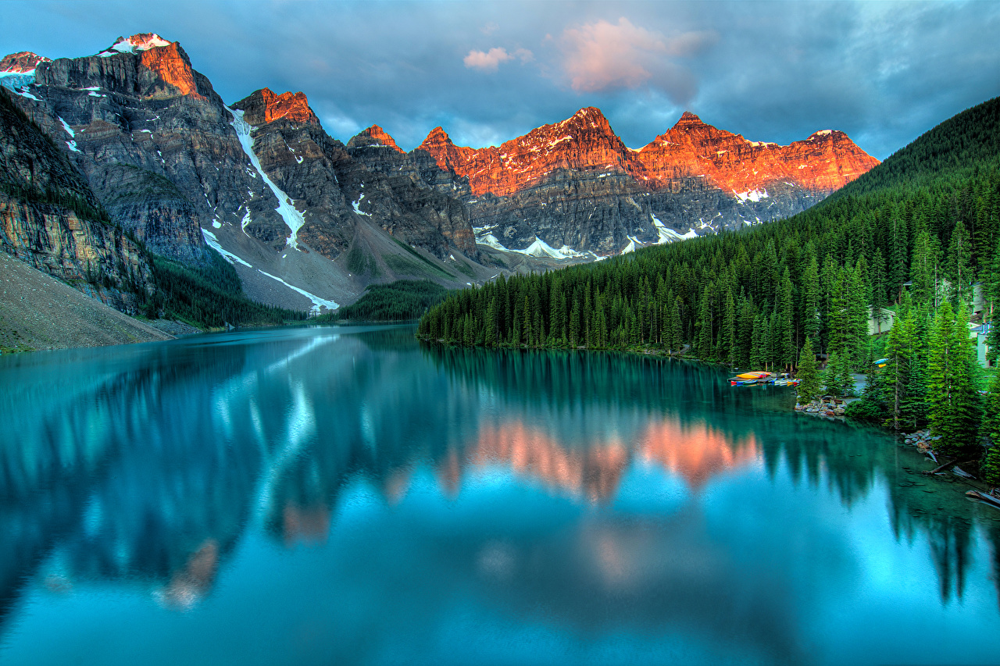

Пейзаж — сравнительно молодой жанр живописи. Веками образы природы рисовались лишь как изображение среды обитания персонажей, в качестве декораций для икон, впоследствии — для сцен жанровых сюжетов и портретов.
Постепенно, с развитием научных и опытных знаний линейной и воздушной перспективы, светотени, пропорциональности, общей композиции, колорита, рельефности изображения, природные виды стали вначале равноправным членом сюжетной композиции, а затем трансформировались в центральный предмет изображения. В течение длительного периода времени пейзажные мотивы представляли собой обобщённые, сочинённые, идеализированные виды. Значительным рывком в отношении осознания художником значения пейзажа являлось изображение им конкретной местности (берег Женевского озера, швейцарский художник XV века Конрад Виц). Пейзажные произведения европейских мастеров XVII—XVIII веков — неотъемлемый образец идеальных эстетических воззрений на пейзаж; работы импрессионистов и постимпрессионистов явились кульминационным моментом необычайного становления пейзажного жанра в конце XIX века.
